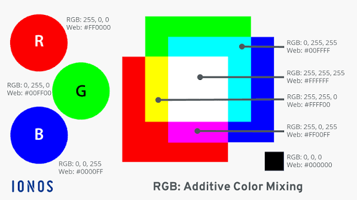

Colors are made by 3 primairy colors who each have 256 different shades. By combining different shades of Red, Green and Blue (GRB) almost any color can be made and displayed onto your screen.

Colors are made by using the hexadecimal system. The hexadecimal system consists of the digets 0 to 9 and the letters A to F.